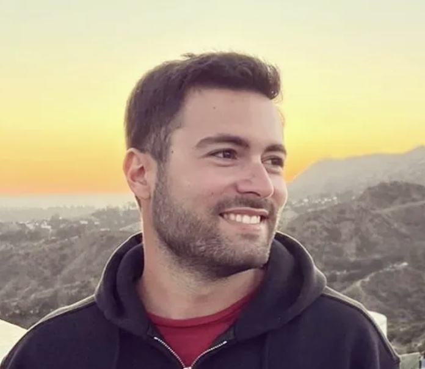

BrainCodes, our lightweight EEG foundation model over discrete neural codes, is out as a preprint. Project Paper

Kleanthis Avramidis
Signal Analysis and Interpretation Lab ↗I come from Athens, Greece. I am a PhD candidate in Computer Science at the University of Southern California, working on Human-Centered Machine Intelligence under the supervision of Prof. Shrikanth Narayanan. I develop machine learning and biomedical signal processing methods that help augment human well-being, from transferable representations of physiological signals such as EEG, ECG and eye movements, to reliable measures of cognitive function and mental health.
Research
Learning transferable biosignal representations
How can we learn from heterogeneous signals and recording settings while preserving information that is relevant to common human function?
Understanding multimodal dynamics of behavior
How do stimuli, context, and individual differences shape physiological and behavioral responses, and what do our derived measurements reflect?
Improving health outcomes and clinical translation
Can these representations and models produce reliable measures of cognitive function, mental health, and temporal change that we could trace?
Updates
Gave a talk on “Scaling Psychiatric Biomarkers in Context and Time” at the CuttingEEG Symposium in San Diego.
Wrapped up my research internship with the Audio & Acoustics Research Group at Microsoft in Redmond, working with Dimitra Emmanouilidou on EEG foundation models and their evaluation.
Our eye-tracking study of depression and suicidal ideation in young adults is published in npj Digital Medicine. Paper
BioCodec is out: we study neural codecs as tokenizers for physiological signals. Paper Code
Presented our work on ECG representation learning at the Apple Workshop on Machine Learning for Health in Cupertino.
Our work on modeling child-parent interactions with ubiquitous sensors is now published in npj Mental Health Research!
Wrapping up a great month visiting the Technical University of Munich and working under Prof. Björn Schuller.
Just received a grant from the USC Center for Music, Brain, and Society to investigate neural entrainment to music!
Co-organized the Workshop on Brain-Body-Behavior Signal Dynamics at ICASSP 2025 in Hyderabad, India.
Excited to kick off a new collaboration with the Chair of Health Informatics at the Technical University of Munich. We will be working on EMG and silent paralinguistics, including both data collection and machine learning analysis.
I was glad to receive an outstanding poster award for our eye-tracking study at the 2024 USC ECE Research Festival!
Our work on efficient representation learning from ECG signals is accepted for publication in the IEEE J-BHI. Excited to work on this project with our collaborators from the Emognition Lab at Wrocław University of Science and Technology.
We had one paper accepted to Interspeech 2024 on how to decode listened speech from brain activity!
Excited to share that I have received the IEEE EMBC NextGen Scholar Award to attend EMBC 2024, for which I author two studies, spanning eye-tracking for biomedical applications and representation learning on EEG.
Happy to share that I will spend this summer in New York City, as a Research Scientist Intern at Meta Reality Labs :D
Happy to share that I just passed my qualification exam toward the PhD degree in Computer Science at USC!
Participating in the CuttingEEG workshop in Los Angeles, organized by amazing collaborators at USC.
Our study, led by Dr. Melinda Chang, on AI for pediatric papilledema, will be published in Ophthalmology Science!
Our most recent work on advancing representation learning for ubiquitous ECG signals is out on arXiv.
Just arrived at Rhodes, Greece for an amazing ICASSP week <3
My first industry experience starts today at the Toyota Research Institute North America in Ann Arbor!
Excited for the research prospects ahead as our team at USC kicks off a new DARPA project on assessing preconscious biomarkers of depression and suicidality.
Our work on pediatric papilledema received a best poster award at the 2023 AAPOS meeting in New York!
Giving a talk on human sensing to foster child and family well-being at the 2023 Annual SAS Conference in Long Beach.
Happy to share that I will be travelling (again) to Greece this summer, presenting 3 accepted papers at ICASSP 2023.
Excited to participate in the IEEE Neurotechnology Workshop in amazing San Diego.
Presenting our contributions in pediatric Ophthalmology at the 2022 Future Vision Forum, taking place here at USC.
New paper including further insights on how AI can leverage visual context to estimate music semantics.
Glad to have been selected and now attending the 2022 MLxHealth Oxford Summer School, remotely from Greece.
Welcoming emotion researchers as a volunteer and presenter at ISRE 2022 in Los Angeles!
Our paper for identifying pediatric papilledema has been accepted for publication at ICIP 2022!
Our proposal submission for ISRE is accepted! We will work on self-supervised models to perceive affect in media.
Our paper on EEG Affective Analysis has been accepted for publication at ICASSP 2022.
Second Prize at Neurohack 2022 for our work on identifying robust markers of dementia! Thanks to the DEMON Network!
Thrilled to be at yet another EUSIPCO, where I will present our paper on EEG Fractal Analysis.
A long journey comes to an end. Presenting my Master's Thesis to complete my undergraduate studies at ECE NTUA. In a few days I will be landing in Los Angeles for an exciting new start as a PhD Student at USC. Fight On!
Our paper on EEG Fractal Analysis has been accepted for publication at EUSIPCO 2021.
I have accepted a PhD student position at the University of Southern California, starting this Fall!
Participated in the QBronze53 Quantum Computing and Programming workshop organized by QWorld in Greece.
Accepted to participate in the HCAP Innovation Challenge! Looking forward to building useful models for the public.
Our new paper on Instrument Classification has been accepted for publication at ICASSP 2021.
These days I am participating and presenting at the online EUSIPCO 2020.
My first ever publication, on Instrument Classification, will be presented at EUSIPCO 2020.